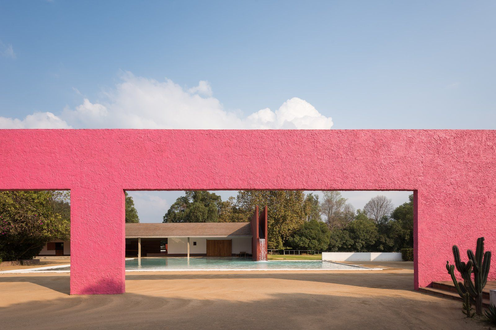
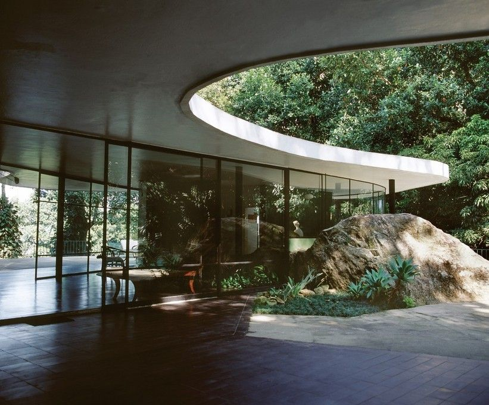
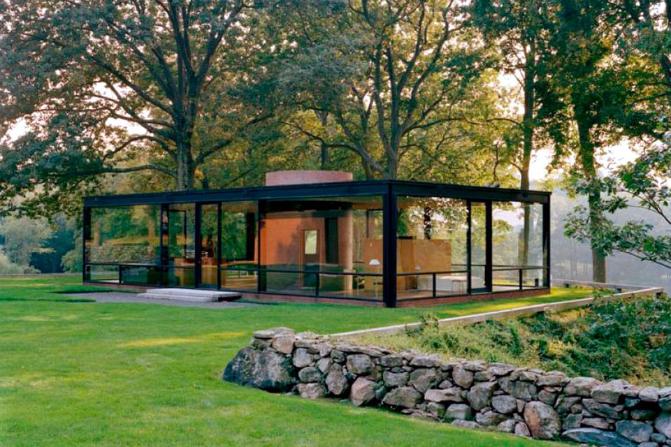
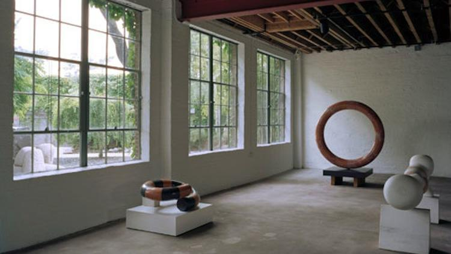

-

Casa Luis Barragán, built in 1948 after the Second World War, was Barragán’s residency and studio located in Miguel Hidalgo district, Mexico City. With the exception of the breakfast nook, the house is designed to not need artificial light during the day, with windows and other openings placed to let in as much light as possible. Opposed to functionalism, Barragán claimed that "any work of architecture which does not express serenity is a mistake.
🏠 Casa Estudio Luis Barragán
📍 Mexico City
-

Casa das Canoas in Rio de Janeiro, Brazil was designed by Oscar Niemeyer in 1951 as a family home. It was used as his family home until 1965, the year in which he had to abandon Brazil due to the military dictatorship. It is considered to be one of the most significant examples of modern architecture in Brazil with its curved flat roof supported by light steel columns and transparent glass walls.
🏠 Casa Das Canoas
📍 Rio, Brazil
-

The Glass House located in New Canaan, Connecticut was completed in 1949, and the architect Philip Johnson resided here from 1949 until his death in 2005. The house was built with the intention to view and observe the surrounding landscape. The house’s exterior walls are made from glass, and despite the lack of walls inside the house, there is a sense of rooms due to the precise placement of furniture. Most of the furniture in the house was designed in 1930 by Johnson’s friend and mentor, Mies van der Rohe.
🏠 The Glass House
📍 CT, United States
-

The Noguchi Museum was founded and designed by Isamu Noguchi in 1985 for the display of what he considered to be representative examples of his life’s work. Located in a 1920s industrial building across the street from where the artist had established a studio in 1960, it has a serene outdoor sculpture garden, and galleries that display Noguchi’s work, along with photographs, drawings, and models from his career.
🏠 Noguchi Museum
📍 Queens, United States